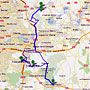
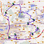
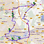
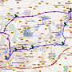

Ligne des transports
Mardi, 19 Mai 2015 00:00

LIGNE N°1
PONTAULT-COMBAULT
CLAYE-SOUILLY
Consulter cette ligne

LIGNE N°2
COLLEGIEN
JABLINES
Consulter cette ligne

LIGNE N°3
COURTRY
LOGNES
Consulter cette ligne partie 1
Consulter cette ligne partie 2

LIGNE N°4
RER TORCY
IVERNY
Consulter cette ligne
LIGNE N°5
EMERAINVILLE
MITRY-MORY
Consulter cette ligne
LIGNE N°6
SAINT-PATHUS
JUILLY
Consulter cette ligne
LIGNE N°7 (vendredi)
SAINT-PATHUS
CLAYE-SOUILLY
Consulter cette ligne
Mise à jour le Vendredi, 18 Septembre 2015 17:42
Retour...